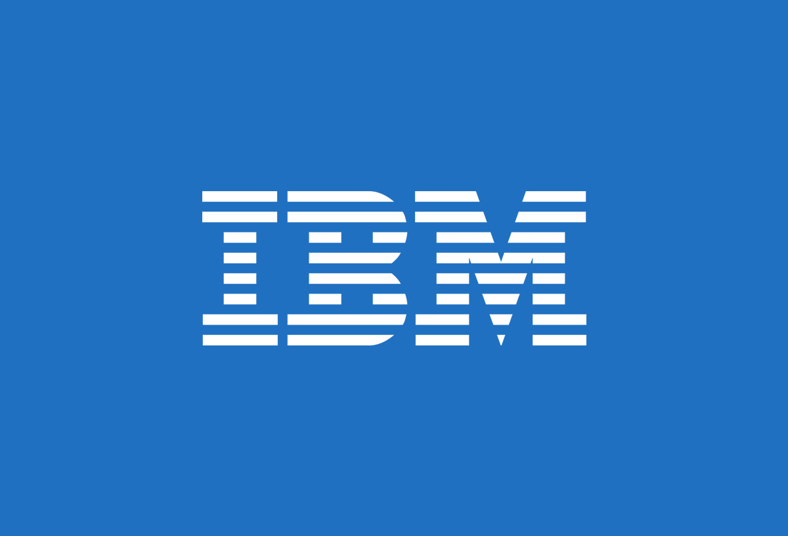

| ¿Qué es? | ¿Qué puestos relacionados a mi carrera hay? |
|---|---|
|
BM (International Business Machines) es una empresa multinacional estadounidense de tecnología y consultoría, que ha estado en el negocio durante
más de 100 años. Fundada en 1911, IBM ha sido un líder en la industria tecnológica desde entonces, con una amplia gama de productos y servicios que
incluyen hardware, software, servicios en la nube, servicios de consultoría, servicios de investigación y desarrollo, entre otros. IBM es conocida por ser pionera en la tecnología de la computación, y ha sido responsable de muchas innovaciones importantes en la industria, incluyendo la creación del primer disco duro, la invención del lenguaje de programación FORTRAN y la creación de la primera computadora personal. Actualmente, IBM se enfoca en áreas como la inteligencia artificial, la nube híbrida, la ciberseguridad, la tecnología blockchain y el Internet de las cosas (IoT), entre otras. La compañía también está comprometida con la sostenibilidad, la diversidad y la inclusión, y ha sido reconocida por su compromiso con la responsabilidad social corporativa. En resumen, IBM es una empresa líder en tecnología y consultoría con una larga historia de innovación y compromiso con la excelencia empresarial.  |
IBM es una empresa grande con una amplia gama de puestos de sistemas en diferentes áreas y niveles de experiencia. Algunos de los puestos de sistemas que puedes encontrar en IBM incluyen: 1. Arquitecto de soluciones: es responsable de diseñar soluciones de sistemas para satisfacer las necesidades del cliente y garantizar la integración y la interoperabilidad de los sistemas. 2. Ingeniero de sistemas: es responsable del diseño, implementación, mantenimiento y soporte de sistemas y soluciones tecnológicas. 3. Administrador de sistemas: es responsable de administrar y mantener sistemas, servidores y aplicaciones, y garantizar la disponibilidad y el rendimiento del sistema. 4. Desarrollador de software: es responsable de diseñar y desarrollar software y aplicaciones para sistemas y soluciones empresariales. 5. Especialista en seguridad de sistemas: es responsable de la seguridad de los sistemas, la protección contra amenazas y la prevención de violaciones de seguridad. 6. Consultor de sistemas: es responsable de asesorar a los clientes en el diseño e implementación de soluciones de sistemas y tecnológicas. 7. Especialista en virtualización: es responsable de la virtualización de sistemas y aplicaciones para aumentar la eficiencia y reducir los costos de TI. 8. Ingeniero de almacenamiento: es responsable del diseño e implementación de soluciones de almacenamiento de datos y sistemas de recuperación de desastres. 9. Especialista en nube: es responsable de la implementación y gestión de soluciones de nube híbrida y de la migración de aplicaciones a la nube. 10. Gerente de proyectos de sistemas: es responsable de liderar equipos de implementación de sistemas y garantizar que los proyectos se entreguen en tiempo y forma. Esta es solo una lista parcial de los puestos de sistemas que puedes encontrar en IBM. La empresa ofrece una amplia variedad de oportunidades de carrera en el campo de sistemas y tecnología. |